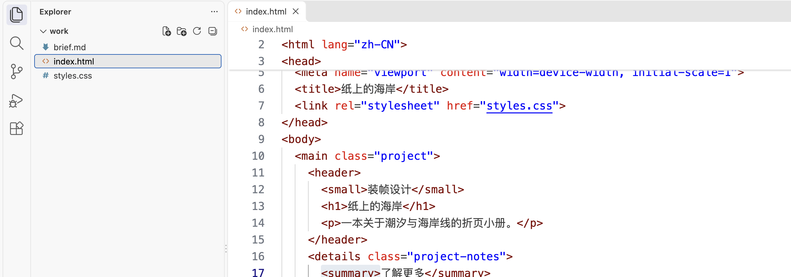
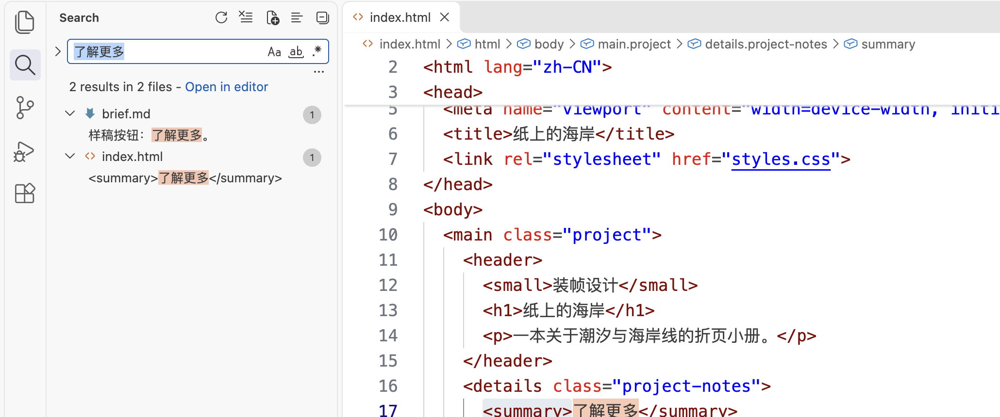
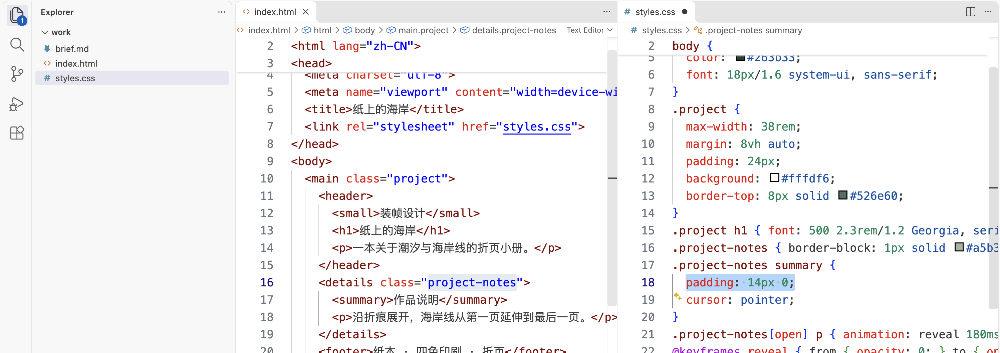
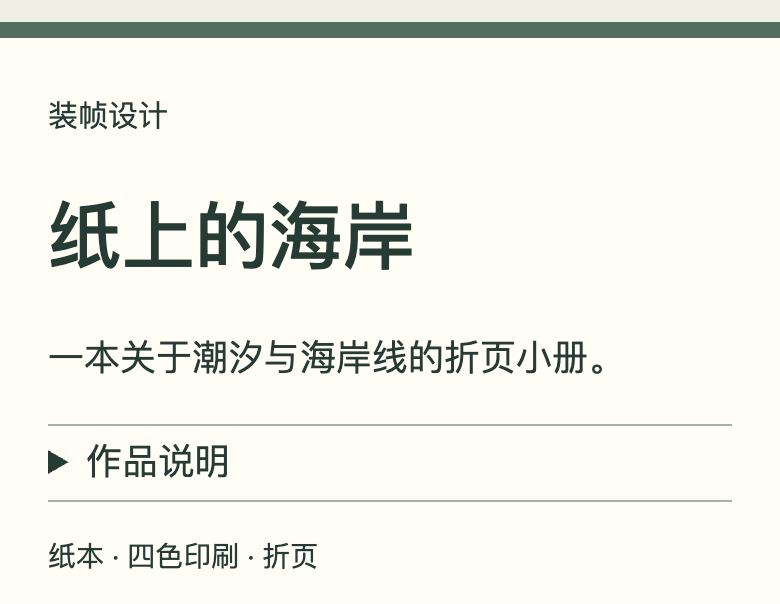
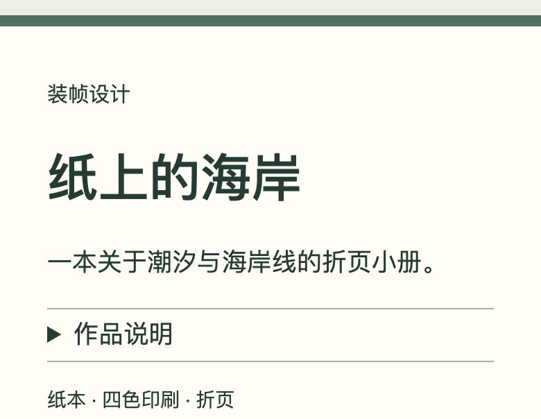
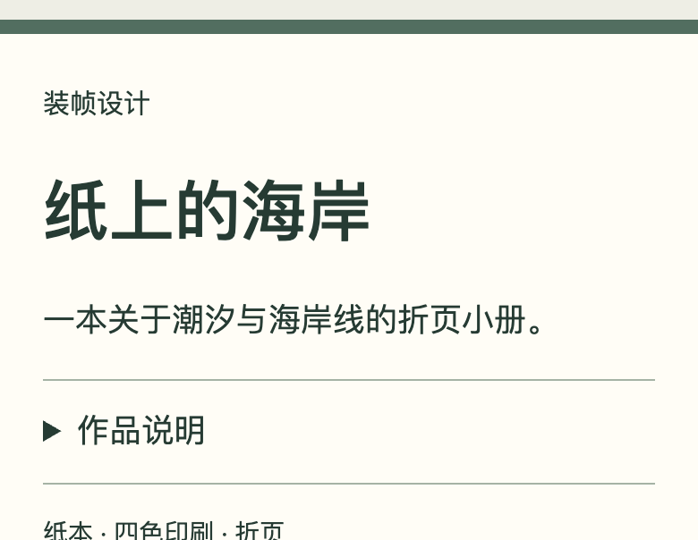
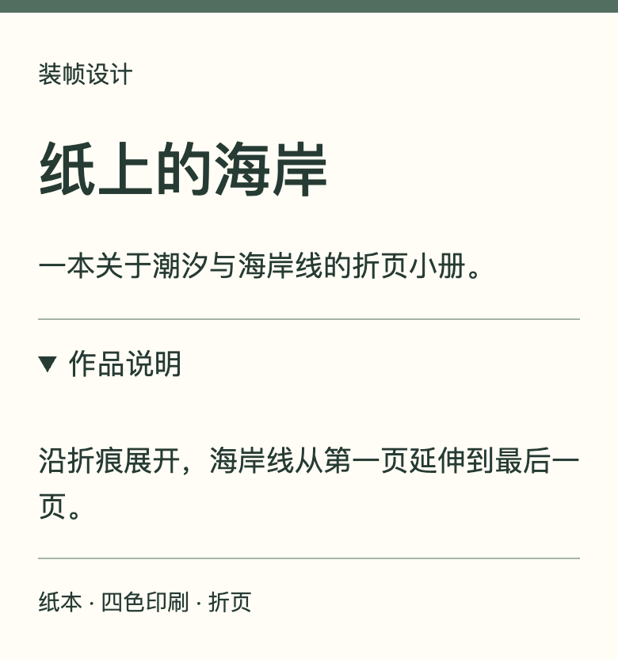
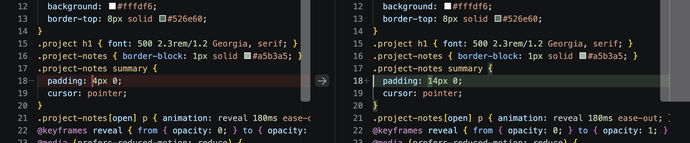

设计师拿到一份折页作品的介绍，要把它做成一个可以打开的网页。页面只需呈现作品名、简介和可展开的作品说明。做到一半，需求稿上加了两条批注：“了解更多”改成“作品说明”，手机上这行文字的上下距离再大一点。本文研究的是 VS Code 怎样支持设计师把这样的页面要求落实到文件里。 展开动效只是网页里已有的一处效果。
这项工作有一个典型的错位：提出要求的人指着页面上的东西说话，编辑器组织的却是文件、文本和修改记录。网页上只是一行“了解更多”，在项目里却至少有三处相关材料：需求稿记着原话，HTML 决定访客读到什么，CSS 决定这行上下有多宽。一个工作区用起来是否顺手，很大程度取决于人能否在这几种表示之间来回走，还知道自己正在改什么。
研究问题与分析思路
用户与目标。 假设使用者能读基础 HTML 和 CSS，会用浏览器查看页面，但没有记住每项内容写在哪个文件。任务从建立一个小型作品网页开始，到能把交付结果与原要求逐项对上结束。
走查方法。 用三个本地文件搭出页面，在 VS Code 中实际打开项目、跨文件查文案、分栏对照结构与样式，再比较修改前后的文件，并用 Chrome 查看成品。配图记录工作区状态。人物是分析用的角色，未对真实使用者开展访谈或计时实验。
分析问题。 每个阶段先问使用者知道什么、还缺什么，再看界面为什么把某些材料放在一起。验收同时看两类证据：编辑器能否帮助人确认改对了文件，浏览器能否确认页面确实可用。
一、开始制作：把一张网页建立成一个可以找回来的项目
做第一版时，设计师先把材料放进一个文件夹：brief.md 保存需求，index.html 放标题、简介和说明文字，styles.css 管字号、间距和展开时的淡入效果。HTML 头部引用样式表，浏览器打开 HTML 就能显示整页。这个小项目没有安装框架或启动服务；工作重点是看清“哪份材料负责什么”。

图 1 中，左边的资源管理器回答“这个项目里有什么”，中间编辑器回答“我现在正在制作哪一部分”。分开放置有一个具体好处：读到 HTML 中引用 styles.css 的那一行，即使还没打开样式表，它的文件名也已经出现在旁边。设计师可以直接过去。若只分别打开两个散落的文件，中间仍然可以编辑，左边却少了一个可靠的项目边界。稍后要找一句文案，首先就得问“我的查找包括哪几份材料”。打开文件夹这个动作，给后续的搜索和导航划定了范围。 VS Code 工作区与用户界面
文件树和顶部标签都会出现 index.html，两者为不同的问题服务。树里的位置比较稳定，用于找回项目材料；标签表示已经打开的工作现场，让人在两三份文件间切换时不必每次重走目录。假如设计师临时去读需求稿，回来时看到标签还在，他可以直接续接原处。项目只有三个文件，这种便利还很轻；当同一个项目有多个页面、样式和说明时，把“文件存放在哪里”与“这次正在使用哪几个”分开，会比反复折叠目录重要得多。
也有 VS Code 帮不到的一步。左边能告诉人有一份 CSS 文件，却不会自动告诉初学者“为什么改文字去 HTML、改间距去 CSS”。所以这里对使用者的假设很重要：一个会基础网页结构、只是还不熟悉这份项目的人，可以借文件名和相邻内容找路；第一次接触网页制作的人，还需要学会这两类文件的职责。用目录树本身的清晰程度评价二者的体验，容易把材料知识不足误判成导航层级不足。
初次进入，先取得一个可辨认的页面
先把时间拨回到接收任务的那一刻。需求里只有作品名「纸上的海岸」、一句简介、一段展开后才需要阅读的介绍，以及纸本和印刷规格。设计师在纸上大概能画出这张页面。打开一个空文件夹，VS Code 中央却没有纸张、画板或手机边框，也没有哪个控件能说明“现在做的是一张作品介绍页”。这段落差会直接影响第一步。一个习惯画板的人容易先问页面多宽；一个熟悉网页的人会先问访客从哪个文件进来。两人面对同一片空白，需要取得的第一个确定答案并不相同。
把首页保存为 index.html，在里面写下作品名和简介，再用浏览器打开它，是这项任务里成本很低的一次验证。标题即使用着浏览器原有的字形、页面尚未配色，也能核对两件实事：文件能作为网页被浏览器读取；正在看的这一页确实写着这次作品的名字。对于初次接手的人，“我打开了一个看起来像首页的文件”至此才变成“这个文件控制着我将要交付的页面”。index.html 是这个静态项目采用的入口约定。换一个已经存在的工程，仍要拿页面内容和资源引用确认入口。只凭文件名去推断，证据还很弱。
接着才有理由引入第二份材料。把作品名、导语和规格写入 HTML 后，浏览器可以显示文字，却还呈现不出上方的绿线、卡片的底色与说明区边框。设计师新建样式表，在首页里留下指向它的引用。此时可以做一个容易撤回的核对：暂时停用这份样式表，观察哪些现象一起消失。文字次序和作品名仍能读到，底色、间距与边界一起变回浏览器给出的外观。重新载入样式，又能同时找回它们。这样理解“结构”和“样式”，靠的是第一次制作时亲眼可见的分工。对熟悉平面稿而刚开始看代码的读者，这个分工比记两个文件后缀更容易迁移到下一张网页。
在这张小页上，还有一项很容易误判职责的设计。访客点一下标题，第二段文字展开，同时有一个短暂的淡入过程。在原文件里，包住标题和内文的 details 元素提供开合，样式表里另有一条规则，让已经展开的段落产生淡入。关掉那条动画规则，文字仍能展开。于是，用户报告“点击后读不到简介”和“内容能看见，但出现得太突然”，对同一个可见区域提出了两条调查路径。第一次做出可操作的骨架时就有机会看清这层分工。以后接到反馈，才有依据决定该回到哪份材料。
文件树给初次接手的人哪些线索
如果设计师接到的是上一位同事留下的文件夹，建文件的动作已经完成，刚才形成的记忆却没有随之交付。左侧三个名称在这里并不等价。需求稿向人解释页面应做到什么，首页包含访客读到的话，样式表需要跟首页发生联系才会影响当前页面。资源管理器将三项并列展示，如实呈现它们在磁盘里的关系；实际制作却要由读者重新找出它们在任务里的先后。一个小小的验证就足够：先对上首页里的作品名，再沿首页头部的引用确认样式文件，最后用需求稿里的措辞核对任务。沿途每一次打开文件都有一个明确的问题，一旦答出就能停下。
这也给“左边放目录，中央放编辑器”一个更具体的解释。初次进入时，左侧适合停留，读者在三个候选之间挑选；熟悉项目后，中央会占去更多注意，左边只在切换材料时才有用途。两块区域可同时存在，让探索期间的短暂试读不必改变项目的组织。本例的图片使用左侧栏；VS Code 也允许调整侧栏位置。实际支撑这个任务的是目录能保持在手边、文件内容有独立的阅读宽度，以及两者在选择之后仍可相互核对。把工作区镜像到另一侧，这三个条件依然可以成立。工作区的范围 · 工作台布局设置
二、接到修改意见：从页面上认识的一句话找到源码
第一版做出来，设计师打开页面，看到“了解更多”。现在他知道访客读到的原话，也知道应该改成什么，却没有记住在源码第几行。此时有两条合理路径。如果他已经确信页面文字就在当前的 HTML 文件，文件内查找就够了；如果手上只有评审批注，并不清楚这句话来自页面模板、文案配置还是旧需求，就应该用工作区搜索。选择入口的依据是已经知道多少，而不是哪个功能层级更高。

图 2 是后一路径的实况。左侧点开搜索，输入“了解更多”，得到 2 个文件、2 处命中。brief.md 里写的是“样稿按钮：了解更多”，index.html 里的字出现在 summary 标签之间。对 UI 设计师来说，后者就是网页上可以点击的说明标题。只看高亮的四个字，两处完全一样；把文件名和命中前后的一小段文字放回来，才分得清“记载要求的地方”和“生成页面的地方”。这个阶段最有价值的设计是分组与上下文，高亮负责把眼睛送过去，无法独自完成选择。VS Code 的跨文件搜索
为什么搜索适合放在侧边，文件却在中央打开？因为第一次点进去可能选错。如果打开需求稿才发现它只是在转述原话，侧边仍然保有同一组候选，下一次只要改选 HTML。若每点一次命中都离开结果页，用户就要记住原查询，返回，重新辨认刚才点过哪一项。这里节省的不是输入四个字的时间，而是判断错误以后恢复到分岔点的成本。中央能展示足够多的代码验证判断，左侧同时保留改选的权利。
活动栏也由此得到一个具体解释。资源管理器和搜索都可以带人进入同一个 HTML，它们回答的问题不同：知道地址时按目录找，只知道内容时按文字找。切换左栏的入口，改变的是查找依据，中央那份文件仍可以作为参照。在这次任务里，搜索两个结果后批量替换反而是错误动作：访客需要读到新文字，需求稿里那条“样稿按钮”的记录却应该保留。可见“找到全部”与“允许全改”之间，还隔着一次业务判断。
两种都说得通的结果，要给使用者一次选错的余地
把自己放在第一次接手项目的人的位置。需求稿里同时有“样稿按钮”和“交付文字”，用中文标得十分清楚。他很可能先点进需求稿，甚至觉得那里才是项目中文案的总表。这个判断有合理之处。网站常有集中管理文字的文件，而他还不熟悉这个项目。如果此时仅凭后缀说“点错了”，读者仍不知道下次该怎么判断。真正可以检查的关系是，首页中的标题有自己的一段文字，页面直接使用它；这份静态 HTML 没有从需求稿读取内容。因此即使改了稿上的“交付文字”，页面也不会随之更新。搜索指出所有相同字样之后，判断哪份材料会产生结果的责任仍然在人。
左边的小段预览在此提供了一种很经济的筛选。读者看到“样稿按钮”时，可以先把命中理解为对旧状态的记录；看到成对的尖括号包着“了解更多”，就有理由去中央打开它。结果行宽有限，装不下控制一切的完整上下文。实际看图二时，不妨只读左边并做一次选择，再看中央是否支持刚才的判断。前者适合比较候选，后者适合检查一个候选与上下几行的关系。两种阅读所需的宽度不同，也就容易理解为何候选和文件一个收得较窄、一个展开得较宽。
这里还有一项常被“更高效地查找”掩盖的价值。此次搜索只有两项，列出它们并没有省掉多少秒钟。真正需要保护的是需求稿中仍然有效的历史信息。如果为了让搜索结果清零而把两处都替换，网页会显示正确的新标题，旧稿却会从此看上去仿佛一开始就写对了。即便验收者只检查成品，也看不出这个损失。同一界面既能批量替换，也允许逐项进去查看，意味着工具把操作规模交给了人。评价这项设计，要看用户在按下替换之前能不能估计波及范围，而不只统计节省了几次点击。
一次检索成功以后，工作区里还多了一样资产：能带人回到源文件的一段线索。评审意见有时只在会议里说一遍，设计师可能得先去问清楚究竟改旧标题还是展开后的正文。回来时保留原查询、两处候选以及已打开的文件，他可以从上次尚未确定的分岔点继续。若三个位置都换成首页或空态，就算他记得项目名，也得重新解释最初为什么选这个词。恢复工作需要保留的是上次的疑问及其候选，而不仅是最后打开的文件。这是搜索区与编辑区能够并存所带来的另一项体验收益。
三、进入编辑：什么时候值得把工作区拆成两栏
改文案时，选中 HTML 里的“了解更多”，替换成“作品说明”，保存就可以。这个动作只需要一份文件。第二条批注“给这一行上下多留一点空间”则不同：项目里页面容器和展开标题都有各自的留白。即使搜到了 padding，也不代表找到了用户手指所指的那一行。真正要建立的关系是：这个可点击标题属于哪段结构，哪一条样式恰好管它？

图 3 保留了两份材料。左边 HTML 中，summary 位于名为 project-notes 的说明区域内；右边 CSS 中，.project-notes summary 正好描述“这个区域里的说明标题”。全页外框的留白也出现在右侧，但属于 .project。设计师把标题上下留白从 4 像素改成 14 像素，可以一边确认左边仍是想改的元素，一边核对右边改的是哪条规则。两个文件名称不同、写法不同，指向的却是同一个页面对象。
一处没有名字的空白，怎样在工作区里找到它
第二条反馈拿走了第一条里最方便的东西。评审者用手指点在页面上说“手机上这行太挤”，文件里查不到“太挤”二字。这个时候立即在工作区搜索“间距”，即使返回零条，也不能说明这项设计没有实现。即使输入样式属性 padding 得到两条，单看两个数字也分不出哪一个负责这行标题。问题出在描述方式发生了转换：反馈沿用屏幕上的方位，源码使用的是元素名、所在区域和属性名。两边没有天生相同的检索词，搜索框也无法替人补出这个词。
可以请评审者把“这行”指得更具体些。希望文字与卡片左右边缘离远一点，希望分隔线与上面的简介离远一点，还是希望手指能点到标题上下更多地方？三项要求若都画成红色箭头指着一条缝，在一张截图上很相似，落实之后改变的区域却不同。本例选第三项，同时希望标题在两道细线之间看起来宽松一点。这样便得到一个可检验的预期：标题仍与上方作品名对齐，卡片的外框仍占原来的位置，折叠行本身应当升高。还没有碰代码，哪几处可以用来排除错误改法，已经能说清了。
从浏览器到编辑器，可以借两种不同的桥。熟悉这份 HTML 的人先找屏幕上紧贴那片空白的“作品说明”，顺着文字找到包住它的 summary，再向上一行读到它属于 project-notes。他带回样式表的是两个名字，组合起来使候选规则迅速变少。对结构还陌生的人，可以在 Chrome 里对标题使用“检查”，把光标移过该元素和父容器，比较浏览器分别标出的区域。框住整张卡片和只框住一行，会得到明显不同的覆盖范围。选中那一行后，样式面板可以核对匹配的规则；回 VS Code 再搜索这个选择器，就有了确实存在于本项目里的词。Chrome 开发者工具的元素与样式检查
开发者工具和 VS Code 在这里各承担一步。浏览器可以回答“指尖下面实际是哪一块”，编辑器能够回答“这条样式在项目哪里、还会管到谁”。在这个直接引用本地 CSS 的小项目里，浏览器中的文件名可以容易地带回文件树。哪怕没有记住行号，也可以带着类名和元素名去找。浏览器里临时试改的数值则不能自动充当已交付的源码。对于设计师，跨工具最值得带回去的东西是刚刚确认过的对象身份，其次才是准备采用的数值。若带回的只有“加十像素”，在项目中仍有两个看似正确的落点。
这个分岔可以实际量出来。保持同一份文字、相同的 390 像素宽视口和标题的收起状态，分别更改卡片和标题的内边距。原状态下卡片内边距为 24 像素，标题上下各留 4 像素，标题元素实测宽 342、高约 36.8 个 CSS 像素。第一种试改把卡片的内边距增到 34 像素，标题和正文一起向内移动，标题宽度缩到 322 像素，高度仍约 36.8 像素。页面确实有了更多空白，但手指可以点选的纵向范围没有增加。第二种改法沿用卡片原来的 24 像素，只把标题上下各自增加 10 像素，标题宽度仍为 342 像素，高度增到约 56.8 像素。两条边一共多出 20 像素，这就解释了视觉变化究竟落到了哪里。



观察这组对照时，可以先看上方大标题。第二张图的大标题离左边更远，第三张与第一张的左边缘对齐。这个位置跟批注所指的标题行相隔一段，却提供了极灵敏的旁证。再看下方“纸本”一行的位置。两种试改都会让它下移，单凭下方内容“被撑开了”，很容易宣布成功；加上对左边缘和点击区域高度的核对，两种方案才能分开。好的参照物往往就在任务边上。它无需改动，恰好能检验这一次修改是否越出了范围。这里测到的是浏览器的元素尺寸，手指点起来的感受仍需要实际使用来评价。
于是再回到图三的分栏，可以看见它有一个成立的前提。只有已经知道“左边这个标题”和“右边那个选择器”存在关系，把两份文件放在一起才会降低理解成本。若还没找到那个标题，盲目打开两栏只是把未知分散到两处。当人掌握了一半线索，固定住已确认的 HTML，右侧换不同规则来试读，布局才真正参与推理。它让已经建立的参照持续可见，允许另一侧继续变化。这也给复杂工作区的布局评审一个贴近任务的问题：在这次切换中，用户需要保护哪一项已经确认的东西，又需要让哪一项保持可替换？
这时分栏的价值超过了它占用的宽度。若放在同一组标签里，用户必须先读左边的名字，在脑中保留它，切到 CSS，再逐项比较。把两个编辑组并排，参照内容由屏幕保管，人只需做识别。这个理由也给出了分栏的使用边界：只替换几个字时，两栏不会多提供证据；在小屏幕上，切开后名字被截断、长行频繁横滚，反而可能让比较更难。衡量标准是这一阶段是否要反复对照两个对象。 VS Code 并排编辑与编辑器组
找对对象以后，还要分清操作权。左栏保持可见，不等于键盘会把字输入那里。在图 3，右侧有正在编辑的值，样式表标签带未保存圆点；左边的文案已经保存。两个窗口如果都叫“当前页面”，这类中间状态就很难描述。VS Code 把文件身份放到标签，把输入位置交给当前编辑器，把是否写入文件单独标记。用户因此可以同时说清三件事：我在看哪个元素、正在修改哪份材料、哪份修改还没存下来。
四、从编辑器到浏览器：一次刷新究竟验证了什么
设计师回到 Chrome，看的是访客将操作的页面。这里最容易出现一种错觉：既然文案已变成“作品说明”，同一轮修改里的留白一定也已生效。实际上文案和留白分别保存在 HTML 与 CSS 中，完全可能一个是新版本，另一个还是旧版本。图 3 特意保留的就是这个时刻。在手动保存、手动刷新的本地流程里，浏览器重新读取的是磁盘文件；它读不到编辑器中尚未保存的 14 像素。
这解释了标签上的圆点为什么值得有一个固定位置。它让设计师以很低的成本排除一种故障。若页面文字已更新而留白似乎没动，先回到 CSS 标签看是否仍有圆点，可以避免把刚刚选对的规则再改一次。反过来，圆点消失只说明文件已经保存；浏览器是否重新载入、打开的是否为同一路径，还要到浏览器确认。使用自动保存或实时重载可以减少手工步骤，编辑中的内容、已保存的文件和正在显示的页面依然是三个不同对象。VS Code 保存与自动保存

这一次保存，到底改变了谁能看见的版本
可以把这次工作停在一个有意思的瞬间。左侧工作区搜索再也找不到首页里的“了解更多”，浏览器已经显示“作品说明”，右侧 CSS 里也写着新的 14。三个地方看起来都像新稿，磁盘上的那份样式却可能还是旧值。为什么一个小圆点足以成为重要的界面元素？因为“当前”一词在这些区域各指不同的东西。光标所在的文件、编辑器内存里最新的字、访客能够重新载入的内容，都可能配得上这个称呼。工作区若只给一个全局的“正在编辑”提示，看到页面一半新、一半旧时，仍无从推断究竟该保存哪一份。
分到文件上的状态能缩小排查范围。红线与未保存圆点也各自解决不同的问题。把 4 写成 14 是语法正确的编辑，即使选错了外框，编辑器也完全可以没有报错。一个临时改过而尚未保存的文件则可以处处正确，同时仍然带着圆点。用户在图三里能顺着文件名找到那个圆点，才能知道“有一个修改等待保存”具体指向 CSS。对一张页面由多份材料组成的任务，这样分配状态尤其重要。若仅在角落给出孤立的成功提示，提示过后用户要重新猜测哪部分已经落实。
这段体验也可以用一次可恢复的失误来衡量。浏览器里文字对了，间距仍旧，设计师很容易想把 14 再增至 20，让差别“更明显”。回到编辑器，若能先看见 CSS 还在等待保存，就能在改变第二个变量以前检验第一个解释。若文件已经保存，下一步可以用浏览器核对读到的样式值，分清是加载了旧页、另一份同名文件，还是规则作用在别处。这条路径的价值在于每走一步就消去一种解释。一次把数值、选择器和浏览器窗口全部换掉，哪怕最后看起来正确，也失去了识别先前原因的机会。
手机宽度还给验证增加了一个条件。设计师在宽屏桌面里编辑 CSS，反馈却来自一部窄屏设备。编辑器里的分栏宽度只影响看代码能看到多少，浏览器的页面宽度才决定访客看到的布局。把 VS Code 拉窄到手机大小，改变的是人的阅读环境；把浏览器视口设为 390 像素，检查的是作品页的运行环境。本例的对照固定后者，因此能把变化归到内边距；换一个视口再测，标题宽度还会变化。这也解释为何截图最好保留视口条件。接手的人知道是在怎样的窗口下观察的，就能复查相同问题。
最后在 390 像素宽的 Chrome 视口打开已保存页面，标题显示“作品说明”，浏览器读出的上下内边距为 14 像素；点击可展开并读到折页介绍。这份证据回答“访客得到什么”。至于页面有没有被意外改到别处，完成态截图却很难回答：原有背景颜色也许动了半级，外框留白也许被连带修改，肉眼未必记得原值。到这里，用户又带着一个新问题返回 VS Code。
五、交付前审阅：把整份页面缩小为这一次的修改

图 5 用 VS Code 的文件比较视图，把起始版本的样式表与当前文件放在一起。左右各自都有几十行样式，但读者首先看见的是第 18 行：旧的 4px 与新的 14px。再往上读一行，可以确认修改属于 .project-notes summary；页面外框规则和下方展开动效都没有出现在这次样式差异中。这里用项目起始版本作为比较基准，同一功能也可以拿两份选定文件来比较。VS Code 文件比较
为什么已经看过网页，还要读一次差异？因为二者解决两种不同的交付风险。浏览器能揭示某条正确写入的样式在页面上没有产生预期效果；差异能揭示一个视觉上不明显、但不属于本次要求的修改。这个实例中，项目差异只涉及 HTML 的标题文案和 CSS 的一条留白规则，需求稿没有被批量改写。对接手的人来说，这比收到“我调好了，你再看看”多了一个可复核的边界。反过来，只看差异里的 14 像素，也不能替同事决定按起来是否舒服。这项感受还得在成品上判断。
到了交付时，什么值得交给下一位读者
设想同事在交付前只问一句：“这次有没有顺手调到整张卡片？”拿最终页给他看，需要他记得旧版卡片的外边距；把整份 CSS 发给他，又得让他从头读几十行。文件比较把阅读范围缩到变更附近，同时保留选择器那一行作为上下文。同事可以用很短的路线回答一个窄问题。旧数值和新数值解释纵向空间为何增加，附近的选择器告诉他这条改动只匹配哪类元素。这里比较的是两份选定的样式文件，其余文件有没有变化则须另行对照。单张 CSS 差异截图无法为整个项目担保，这正是交付时要说明比较对象的原因。
同样一条差异，不同角色也会读出不同问题。维护源码的同事先看规则范围；给过批注的设计师更关心手机上标题与细线的距离，以及点在文字旁边还能否展开；只来浏览作品的人关心的是有没有入口可点，点后能不能读完说明。一次验收可以让他们看同一项修改，却很难用同一张截图回答所有人。文章里把“修改了哪一行”和“访客实际得到什么”放在一起，前一份证据帮助追溯，后一份允许独立体验。工作区的比较视图与可打开的网页分别服务于这两次阅读。
回看从初稿到交付的几个转折，可以发现用户掌握的信息一直在变。第一次打开文件夹，他需要作品名来辨认首页；接到文字反馈，他手上有一句可以直接查找的话；接到留白反馈，他只有屏幕上的一处位置，需要先找到标题元素；浏览器显示半新半旧时，他又有了文件名和保存状态可供排查。熟练程度当然会影响速度，但同一个人在同一项任务里也会一会儿知道准确地址，一会儿连目标叫什么都说不上来。只给用户贴上“新手”或“熟手”的标签，很难预测什么时候他需要搜索、什么时候需要分栏。眼下掌握的线索，更能解释为什么在这个时刻换一种工作区布局。
对读者而言，评估这段体验可以从一个很小的反问开始。假如隐藏左侧候选，读错需求稿之后还剩什么线索能回到首页？假如关掉浏览器，只留下两份并排文件，怎样确认可点击区域真的长高了？反过来，假如只交付最终页面，又从哪里辨认 10 像素究竟加在外框还是标题？把一个区域暂时拿走，任务里丢掉的判断能力就变得具体。沿着这张网页回看 VS Code，各块区域的必要性，也正是从这些需要人作出判断的时刻逐一显出来的。
整段旅程由同一张网页串起，VS Code 却让设计师用几种不同的问题接近它：目录里有哪些材料；这句话出现在哪里；哪两处需要对照；修改有没有保存；相对起稿究竟动了什么。 资源管理器、搜索、编辑组和差异视图的价值，就在于用户可以随问题改变观察方式，同时保有文件名、内容和工作位置这些线索。对这次任务，最有解释力的体验标准不是熟记了多少入口，而是：拿着一句面对网页提出的意见，能否找到正确的修改对象；选错时能否退回；做完以后，又能否用网页结果和文件差异分别说明自己完成了什么。